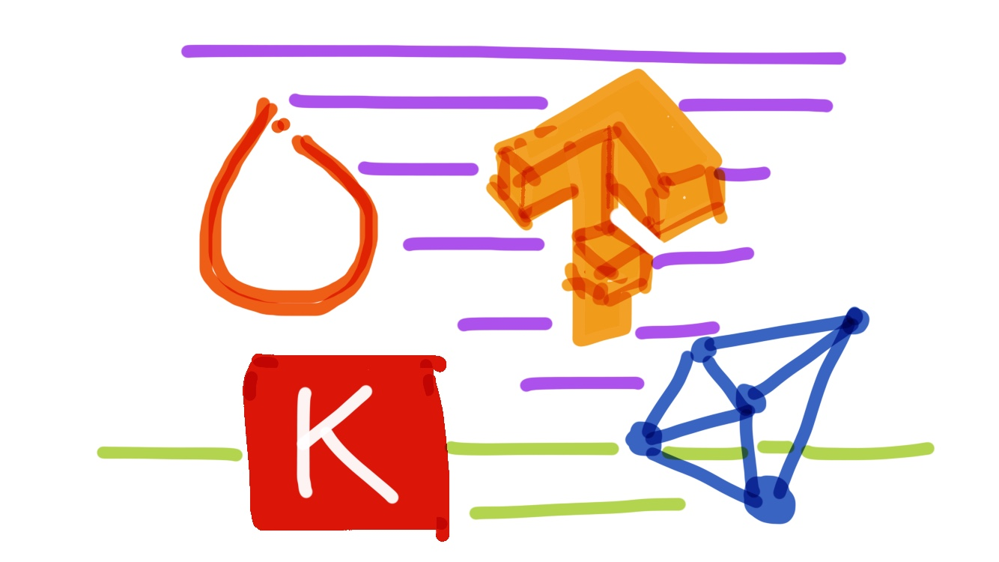

tl;dr: No secret: ConvNets are still complex even when you compare across APIs that sound similar for four deep learning frameworks. Here, you'll find an attempt to compare simple ConvNets in these frameworks. Also, included is a little ConvNet conceptual breakdown. Lots of reference code.
Posted: 2018-05-13

Introduction
I've found recently that the Sequential classes and Layer/Layers modules are names used across Keras, PyTorch, TensorFlow and CNTK - making it a little confusing to switch from one framework to another. I was also curious how easy it would be to use these modules/APIs in each framework to define the same Convolutional neural network (ConvNet).
Let's get through some terminology, first. You can skip to the Code if you are already familiar with ConvNets on images. Note, the code originates from projects working with MNIST handwritten digits dataset.
The neural network architecture used in this post is as follows.
- Convolutional layer
- Max pooling layer
- Convolutional layer
- Max pooling layer
- Fully connected or dense layer with 10 outputs and softmax activation (to get probabilities)
A convolutional layer creates a feature map (using a filter or kernel, which I like to refer to as a "flashlight", shinning on the image and stepping through with a sliding window of 1 unit, that's a stride of 1, by the way). A good reference for this is in the CNTK Tutorial.

A pooling layer is a way to subsample an input feature map, or output from the convolutional layer that has already extracted salient features from an image in our case.

A fully connected layer is defined such that every input unit is connected to every output unit much like the multilayer perceptron.

Not represented in the code below, but important nonetheless, is dropout. Dropout removes a percentage of the neuron connections - helping to prevent overfitting by reducing the feature space for convolutional and, especially, dense layers.

Remember, the power of a convolutional layer is that we don't have to do much upfront raw image processing. The layer(s) will subsequently find the most salient features for us.
In this post you will find ConvNets defined for four frameworks with adaptations to create easier comparisons (please leave comments as needed). The full example code can be found as a Jupyter notebook - Ref.
The Frameworks
Keras
Below is a ConvNet defined with the Sequential model in Keras (Ref). This is a snippet with only the model definition parts - see the References for the full code example.
"""
Adapted from:
https://github.com/keras-team/keras/blob/master/examples/mnist_cnn.py
"""
import keras
from keras.models import Sequential
from keras.layers import Dense, Flatten
from keras.layers import Conv2D, MaxPooling2D
model = Sequential()
model.add(Conv2D(32, kernel_size=(3, 3),
strides=(1, 1),
padding='same',
activation='relu',
input_shape=input_shape))
model.add(MaxPooling2D(pool_size=(2, 2)))
model.add(Conv2D(64, kernel_size=(3, 3),
strides=(1, 1),
padding='same',
activation='relu'))
model.add(MaxPooling2D(pool_size=(2, 2)))
model.add(Flatten())
model.add(Dense(num_classes, activation='softmax'))
sgd = SGD(lr=0.05, decay=1e-6, momentum=0.9, nesterov=True)
model.compile(loss='categorical_crossentropy',
optimizer=sgd,
metrics=['accuracy'])
What you don't see is:
- Fit/train (
model.fit()) - Evaluate with given metric (
model.evaluate()) - To add dropout after the
Convolution2D()layer (or after the fully connected in any of these examples) a dropout function will be used, e.g.,Dropout(0.5) - Sometimes another fully connected (dense) layer with, say, ReLU activation, is added right before the final fully connected layer.
PyTorch
Below is a ConvNet defined with the Sequential container in PyTorch (Ref). This is a snippet with only the model definition parts - see the References for the full code example.
import torch
import torch.nn as nn
import torch.nn.functional as F
class ConvNetPyTorch(nn.Module):
"""Adapted from:
https://github.com/rasbt/deep-learning-book/blob/master/code/model_zoo/pytorch_ipynb/convnet.ipynb
"""
def __init__(self, num_classes=10):
super(ConvNetPyTorch, self).__init__()
self.layer1 = nn.Sequential(
# 28x28x1 => 28x28x32
nn.Conv2d(in_channels=1,
out_channels=32,
kernel_size=(3, 3),
stride=(1, 1),
padding=1), # (1(28-1) - 28 + 3) / 2 = 1
nn.ReLU(),
# 28x28x32 => 14x14x32
nn.MaxPool2d(kernel_size=(2, 2),
stride=(2, 2),
padding=0)) # (2(14-1) - 28 + 2) = 0
self.layer2 = nn.Sequential(
# 14x14x32 => 14x14x64
nn.Conv2d(in_channels=32,
out_channels=64,
kernel_size=(3, 3),
stride=(1, 1),
padding=1), # (1(14-1) - 14 + 3) / 2 = 1
nn.ReLU(),
# 14x14x64 => 7x7x64
nn.MaxPool2d(kernel_size=(2, 2),
stride=(2, 2),
padding=0)) # (2(7-1) - 14 + 2) = 0
self.linear_1 = nn.Linear(7*7*64, num_classes)
def forward(self, x):
out = self.layer1(x)
out = self.layer2(out)
out = out.reshape(out.size(0), -1)
logits = self.linear_1(out.view(-1, 7*7*64))
probas = F.softmax(logits, dim=1)
return logits, probas
model = ConvNetPyTorch(num_classes).to(device)
What you don't see is:
- Fit/train (
model.train()) - Evaluate with given metric (
model.eval()) - To add dropout after the
nn.ReLU()layer (or even after the fully connected in any of these examples) a dropout function will be used, e.g.nn.Dropout(0.5) - Sometimes another fully connected (dense) layer with, say, ReLU activation, is added right before the final fully connected layer.
Tensorflow
Below is a ConvNet defined with the Layers library and Estimators API in TensorFlow (Ref). This is a snippet with only the model definition parts - see the References for the full code example.
import tensorflow as tf
# Create the neural network
def convNetTensorFlow(x_dict, n_classes, reuse, is_training):
"""Adapted from:
https://github.com/aymericdamien/TensorFlow-Examples/blob/master/examples/3_NeuralNetworks/convolutional_network.py
"""
# Define a scope for reusing the variables
with tf.variable_scope('ConvNet', reuse=reuse):
# TF Estimator input is a dict, in case of multiple inputs
x = x_dict['images']
# MNIST data input is a 1-D vector of 784 features (28*28 pixels)
# Reshape to match picture format [Height x Width x Channel]
# Tensor input become 4-D: [Batch Size, Height, Width, Channel]
x = tf.reshape(x, shape=[-1, 28, 28, 1])
# Convolution Layer with 32 filters and a kernel size of 5
conv1 = tf.layers.conv2d(x, 32, 3, activation=tf.nn.relu)
# Max Pooling (down-sampling) with strides of 2 and kernel size of 2
conv1 = tf.layers.max_pooling2d(conv1, 2, 2)
# Convolution Layer with 64 filters and a kernel size of 3
conv2 = tf.layers.conv2d(conv1, 64, 3, activation=tf.nn.relu)
# Max Pooling (down-sampling) with strides of 2 and kernel size of 2
conv2 = tf.layers.max_pooling2d(conv2, 2, 2)
# Flatten the data to a 1-D vector for the fully connected layer
fc1 = tf.contrib.layers.flatten(conv2)
# Output layer, class prediction
logits = tf.layers.dense(fc1, n_classes, activation=None)
return logits
"""...[snipped for brevity]"""
# Build the Estimator
model = tf.estimator.Estimator(model_fn)
What you don't see is:
- Fit/train (
model.train()) - Evaluate with given metric (
model.evaluate()) - To add dropout after the
tf.layers.conv2d()layer (or even after the fully connected in any of these examples) a dropout function will be used, e.g.tf.layers.dropout(inputs=net_layer, rate=0.5, training=is_training) - Sometimes another fully connected (dense) layer with, say, ReLU activation, is added right before the final fully connected layer.
For more see tensorflow in the References below.
Cognitive Toolkit (CNTK)
Below is a ConvNet defined with the Layer API in CNTK (Ref). This is a snippet with only the model definition parts - see the References for the full code example (Note: as of this writing CNTK is Windows or Linux only)
import cntk as C
def convNetCNTK(features, num_output_classes):
"""https://cntk.ai/pythondocs/CNTK_103D_MNIST_ConvolutionalNeuralNetwork.html"""
with C.layers.default_options(init=C.glorot_uniform(), activation=C.relu):
model = C.layers.Sequential([
C.layers.For(range(2), lambda i: [
C.layers.Convolution((3,3), [32,64][i], pad=True),
C.layers.MaxPooling((2,2), strides=(2,2))
]),
C.layers.Dense(64),
C.layers.Dense(out_dims, activation=None)
])
return model(features)
What you don't see is:
- Fit/train (
trainer = C.Trainer()andtrainer.train_minibatch()) - Evaluate with given metric (
out = C.softmax()andout.eval()) - To add dropout after the
C.layers.Convolution()layer (or even after the fully connected in any of these examples) a dropout function will be used, e.g.C.layers.Dropout(0.5). - Sometimes another fully connected (dense) layer with, say, ReLU activation, is added right before the final fully connected layer.
Conclusion
No real conclusion except to say these frameworks do pretty much the same sorts of things and all have different API layers, high-level to low-level. I did find Keras to be the easiest and just as fast as TensorFlow - albeit with a lot abstracted away, which is generally good if one needs a quick jumping off point. The benchmarks are not official in full code sample notebook.
The full code samples are in this Jupyter Notebook. Certainly some room for improvement in code and benchmarking so if you have any ideas, please leave a comment.
References
Samples adapted in this post:
- Keras code sample with
Sequentialmodel Ref - PyTorch code sample with
Sequentialcontainer Ref - TensorFlow code sample with
LayersandEstimatorsAPIs Ref and ConvNets Tutorial at this Doc - CNTK code sample with
LayerAPI Doc
A great book from which I took some of the concepts written in this post: Book and Code
Even more nice code samples:
- Kaggle Keras code sample: https://www.kaggle.com/tonypoe/keras-cnn-example?scriptVersionId=589403
- Keras example: http://machinelearningmastery.com/object-recognition-convolutional-neural-networks-keras-deep-learning-library/
- PyTorch example: https://github.com/yunjey/pytorch-tutorial/blob/master/tutorials/02-intermediate/convolutional_neural_network/main.py
- CNTK example: https://cntk.ai/pythondocs/CNTK_201B_CIFAR-10_ImageHandsOn.html
- TensorFlow Estimators example: https://jhui.github.io/2017/03/14/TensorFlow-Estimator/
Thanks for reading.
Appendix
Nice explanation of tensor layouts (PyTorch vs. TensorFlow) in a PyTorch forum post by Mamy Ratsimbazafy (Post):
Furthermore there might be a difference due to the Tensor layouts:
PyTorch use NCHW and Tensorflow uses NHWC, NCHW was the first layout supported by
CuDNN but presents a big challenge for optimization (due to access patterns in
convolutions, memory coalescing and such …).
NHWC is easier to optimize for convolutions but suffer in linear layers iirc
because you have to physically transpose/permute the dimensions.
Furthermore, due to it’s dynamic nature, PyTorch allocate new memory at
each new batch while Tensorflow can just reuse previous memory locations
since size is known in advance.
Memory is THE bottleneck in Deep Learning not CPU, the big challenge is how
to feed data fast enough to the CPU and GPU to get the maximum GFLOPS throughput.